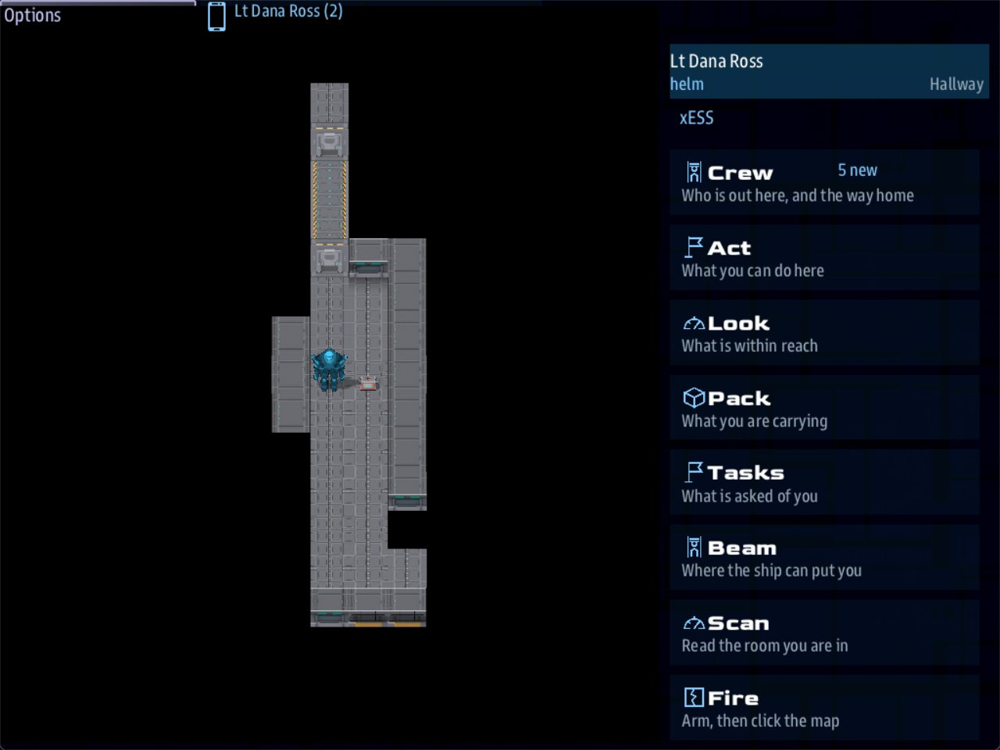

Class 3, Lecture 15 - Boarding an enemy ship¶
What you will have at the end¶
A pirate raider, the Black Gull, standing off Kesh Relay. The crew runs her down and she strikes her colors. Comms sends a party across, and they walk her deck: a prisoner in the brig, a gunner in the boat bay with the relay's spare beacon cell on her back, and the captain's strongbox, which ends it one of three ways.
Nobody draws that deck. The game builds it from the ship's own plan, the one
Engineering looks at. You write what is on it, and you say where each thing goes by the
kind of room: Mark: brig.

Helm's handheld aboard the Black Gull: Lt Ross stands in a hallway of the deck the game built from the ship's plan, the boarding kit a step away.You change two files. In mission.amd you add one side, three quests, four things
aboard and six rooms. In story.mast you add two lines to the map, one line to the
card you have, and one new card of four lines.
Read this before you start. Most of this lecture was measured in a stand-in for the game, with stand-in consoles driven by a script: 13 plays, and 33 files with one line changed. Then it was played in the real game, with Helm and Comms going across. What the game showed is on this page as it showed it. One part came after that: the gunner hands over her cell in a scene, and that scene has not been played yet.
This feature is also new. Step 9 ends with what to know before your crew finds it.
The video¶
About 6 minutes. Subtitles are available in the player.
Before you start¶
MyAwayas Lecture 14 left it.sbs lint MyAwaysaysclean.- A command prompt open in
C:\Cosmos\data\missions.
This lecture uses five windows:
Words for this lecture:
| Word | Meaning |
|---|---|
| Strike her colors | Surrender. A ship that has struck is on nobody's side |
| Prize | A ship that has struck and been claimed. She joins your side |
| Deck | The inside of a ship, as a map the party walks. The game draws it |
| Kind of room | brig, cargo, quarters, bay: what a room is for, not what it is called |
| Stand down | Put the weapons away. Once a ship has struck, her crew do |
Step 1 - What the game does, and what it asks for¶
You met the Boarding Party in Lecture 1, and a map to walk in Lecture 7. A ship's deck is the same thing with the map made for you. The game offers it by itself. No card opens it.
On the Comms console, with a ship selected, a button Send a boarding party appears when all four of these are true. Each was tried.
| It needs | In MyAway |
Tried by taking it away |
|---|---|---|
| The ship has struck | Step 5 makes her strike | Before she strikes Comms offers Hail, Taunt and Surrender now |
| Her hull has a plan | A pirate_strongbow has one, with rooms |
See the table below |
The station art is installed |
It is. It is the last line of story.json, from the starter |
With that line gone, Comms would not open on her at all |
| No other party is out | Not while anybody is down at the relay. The relay party is open all game | Comms answers We cannot take a party aboard while your people are elsewhere. |
Look at the last row. It is the one that shapes this lecture.
One party at a time. Your relay party opens in the first second, because the ship starts within 6000 of the relay. And a party on a map never closes by itself. Beaming up does not close it. Only the end of the game does, or a card. When nobody of that party is on the ground, the button gives way: it ends the landing and the crew goes aboard her. But with anybody still down at the relay, Comms gets the answer in the table, and nobody is moved.
You will fix that with two lines of story.mast and one quest. The card that makes her
strike calls the landing party home first. A quest opens the relay again when the ship
comes back. Nothing on the ground is lost in between: packs, doors, pickups and facts
were all still there afterwards.
Which ships have a deck¶
The plan comes from the hull, the last-but-one word of the line that puts a ship on the map. The game ships 63 plans. The team that built the feature stood your kinds of room on every one:
| Hulls | What is aboard |
|---|---|
| The three big pirates, the TSN ships, the Ximni ships, three Arvonians, some starbases | Rooms: a brig, quarters, a hold, a sickbay and more |
| Every Kralien, Torgoth, Skaraan and Biomech ship, the fighters, the freighters | A plan with engines and hallways, and no rooms |
No hull at all has a bridge.
You do not have to do anything to get a plan. Every hull the game ships has its plan, whatever races a mission allows, so a ship of any race that strikes can be boarded.
Step 2 - A side to strike¶
A ship is on a side. Yours is tsn, and story.mast makes it. The pirates need one.
Go to the very end of mission.amd. Leave two blank lines, then type:
// ---- Sides. The crew's own side, `tsn`, is made in story.mast. This is the other one.
// `Enemies: tsn` is said once, here, and holds both ways.
## [Sides](sides)
### [Pirates](pirate)
---
Color: #F40
Enemies: tsn
---
The crews that work the Kesh run when nobody is watching it.
If you took Class 2 you have written this before. If not: two hashes and the key
sides make the section, the record's key pirate is the word a ship uses to join
the side, and Enemies: tsn makes the two sides enemies.
Save, and run lint. It says clean.
Step 3 - The ship¶
Open story.mast. Find the line that puts Kesh Relay on the map. It begins
npc_spawn(0, 0, 0, "Kesh Relay". Put your cursor at the end of it and press Enter
twice. Type these two lines, lined up with the line above them:
gull = npc_spawn(20000, 0, 20000, "Black Gull", "pirate, ship, gull", "pirate_strongbow", "behav_npcship")
set_pos(gull, 6000, 0, 4000)
You read a line like the first one in Class 1.
| On the lines | Meaning |
|---|---|
20000, 0, 20000 |
Where she comes FROM. Not where she is |
"Black Gull" |
Her name. It is on the Comms button's answer and on the Boarding Party tile |
pirate |
Her side: the key from Step 2. It stays first |
ship |
A role. Keep it: Comms looks for it |
gull |
Your role. A quest and a card will look for it |
"pirate_strongbow" |
Her hull, and so her deck. A pirate raider, with no fighter bay |
6000, 0, 4000 on the second line |
Where she is when the game starts: about 5,000 from your ship |
Why two places? A ship that has struck and is not boarded turns for the place she came from, at speed, and when she gets there she is taken off the map. That is the game's rule for every ship that strikes. So where she came from must be a long way from where she is.
Tried for this page with one place, 6000, 0, 4000 on the first line and no second
line: she struck, and eight seconds later she was gone, with no word to anybody.
Why a hull with no fighter bay? The Black Gull was first a pirate_brigantine, and
in the game that was a mistake. A brigantine is a light carrier. Legendary Missions
launches a carrier's fighters at your ship, so six fighters named Black Gull and a
number came out at the start and shot at the ship all game: before she struck, after
she struck, and after she was taken. A pirate_strongbow is a raider about the same
size, with no bay. Before you give a ship a hull, look it up in the ship data: a hull
whose roles say carrier brings fighters.
Save, and run lint: clean.
Step 4 - Three quests¶
In mission.amd, find Bring Pim Her Tablet, the last quest in the Quests section.
Below its last line, leave a blank line and type:
### [Run Down the Black Gull](chase)
---
Scope: shared
Starts when: at once
Objective: Close to within 1500 of the Black Gull
Done when: reach gull 1500
Then: reveal back
---
 The Black Gull, out past the relay.
A pirate raider is standing off the dark relay, waiting for a convoy that cannot see her.
Run her down. A pirate crew caught by a navy ship will often strike rather than fight.
### [Come Back to Kesh Relay](back)
---
Scope: shared
Starts when: revealed
Objective: Settle with the Black Gull, then come back within 3000 of Kesh Relay
Done when: reach relay 3000
Then: signal relay_reached
---
She has struck her colors. The beacon is still dark.
### [Take the Black Gull](prize)
---
Scope: shared
Starts when: at once
Objective: Board the Black Gull and take her as a prize
Done when: signal boarding_deck_take
Reward: 200 credits
---
A raider is worth more to the Kesh run with a navy crew aboard than as wreckage.
## Once she strikes
-  Comms can send a boarding party across.
-  Her papers are aboard somewhere. Find them, and she is yours.
Every line is one you have written before. What matters is how they hang together.
The descriptions are pages for the bridge, as in Lecture 13. pirate_strongbow is the
hull story.mast gives the Black Gull, so the lead line draws the ship they are chasing.
flag and chest are two more icon names.
| Quest | It waits for | When it is done |
|---|---|---|
| Run Down the Black Gull | The ship within 1500 of anything wearing the role gull |
It reveals the next one. Step 5's card hears that |
| Come Back to Kesh Relay | The ship within 3000 of the relay again | It sends relay_reached: the signal that opened the relay party the first time |
| Take the Black Gull | boarding_deck_take: the game's own signal for a prize |
200 credits |
The numbers fit each other. She sits 7,200 from the relay. When the ship is within 1500 of her it is at least 5,700 from the relay, so the crew has to turn round and fly back before the second quest can finish.
Save, and run lint. It has one thing to say:
[WARNING] line 157:19: `prize` waits for the signal `boarding_deck_take`, and nothing in the mission sends it, so that wait never ends. Check the spelling against the line in the story that sends it (unfired-signal)
Lint is right, as it was in Class 1. Nothing sends that signal yet. Step 7 does.
Step 5 - The card¶
Two edits in story.mast.
First, the new card. Go to the very end of the file, below the last ->END. Leave
two blank lines and paste this, with the first lines at the left edge:
#
# Come Back to Kesh Relay: what happens when that step starts.
#
//shared/signal/quest_started if QUEST_ID == "back"
boarding_visit_end()
for gull in role("gull"):
side_surrender(gull)
->END
It is the card you pasted in Class 1 for the tug, hearing a different step start.
| Line | Meaning |
|---|---|
if QUEST_ID == "back" |
Only when the step that started is this one. Yours to change: the key of your quest |
boarding_visit_end() |
One party at a time. Whoever is down at the relay is brought home, and the relay party is closed |
for gull in role("gull"): |
For every ship wearing this role. Yours to change: the role, in the quotes |
side_surrender(gull) |
She strikes. This line is indented twice |
->END |
The block is finished |
Second, one line on the card you already have. Find the starter's card, the block
that begins //shared/signal/relay_reached. Add one line above the long one:
->END if party_ship is None
boarding_visit_end()
boarding_visit(party_ship, boarding_ground_scenes(), title="Kesh Relay", area="landing", stories=amd_section(MISSION_DOC, "side_stories"))
That is the same call, for the other direction. When the ship comes back to the relay with somebody still aboard the Gull, they are brought home and the relay opens. Without that line the relay would never open again: the second quest would be done, and the party it tried to open would have been refused.
Save, and run lint. It repeats its one warning from Step 4, and nothing else.
What about "Surrender now"?¶
Comms had a button of that name on her all along. It is the game's own way to make a ship strike, and it is a roll of the dice.
| Her weakest shield | What "Surrender now" did |
|---|---|
| Full | Go climb a tree, Artemis! Every time: above half, she always refuses |
| Set to 30 percent | We can still defeat you, Artemis! Prepare to die! twice in one play. In another, the second press got OK we give up, Artemis. |
| Under about a tenth | Better odds. But the code says a refusal down there is final: the button goes away for good. Not played |
So a crew can talk her down that way, if Weapons has done the work first. Your story
cannot count on it, and that is why the card exists. The two do not fight. A ship that
Comms talked down, with somebody still down at the relay, got We cannot take a party
aboard while your people are elsewhere. Then the helm closed to 1500, your card ran,
and the button worked.
Step 6 - What is aboard¶
Now the part you came for. Four records, in the sections you already have.
Two words are new, and they are the whole lecture:
Area: deck means the deck of whatever ship the crew boards. Mark: is not a mark in a
file, because there is no file. It is a kind of room.
| You write | Where it stands |
|---|---|
Mark: brig, cargo, quarters, sickbay, bay, mess, lab, airlock |
In a room of that kind |
Mark: entry |
Beside the place the party arrives |
Mark: hallway |
In a hallway |
In the Props section, below the last line of Pim's medical kit, leave a blank line and type:
### [Captain's strongbox](strongbox)
---
Area: deck
Mark: brig
Sprite: prop:crate_shield
Scene: strongbox
Blocks: yes
Scan: Plate steel, bolted through the deck. Paper inside, and a ring of keys.
---
A strongbox bolted to the deck of the brig, where nobody would think to look for it.
### [Boarding kit](gull_kit)
---
Area: deck
Mark: entry
Sprite: prop:crate_medical
Item: medkit
Scan: A medical kit, sealed. Nobody aboard has needed it yet.
---
A medical kit on a hook beside the entry port, for whoever comes aboard the hard way.
In the People section, below the last line of the second Pim, type two people:
### [Mate Oduya](oduya)
---
Area: deck
Mark: brig
Sprite: fig:junker_f
Face: female
Calm: yes
Talk scene: oduya
Scan: One human. Nine days of ship's biscuit, and not hurt.
---
The mate of the convoy tender, sitting on the brig's one bench with her arms folded.
### [Gunner Brakk](brakk)
---
Area: deck
Mark: bay
Sprite: fig:hunter_f
Face: female
Calm: yes
Talk scene: brakk
Scan: One human. Her cutlass is on the deck at her feet. One power cell, slung on her back.
---
The Gull's gunner, in the boat bay, with her cutlass at her feet and the tender's beacon cell on her back.
Every other line is one from Lectures 10 and 11. A prop is still a scene, a pickup or scenery. A person is still calm or not.
Why is the gunner calm? Once a ship has struck, her crew stand down, and the gunner
with them. The game showed it before this record said so: Brakk was first written as a
hostile, with HP: and Notice:, and in the game she still did not fight. A crew member
stood beside her for fifteen seconds and was not hit. Calm: yes says it in the file,
where the next writer can read it. It also means nobody can shoot her, so her cell comes
from her scene, in Step 7.
Here is where the game stood them, on this hull, with exactly these four records:
| Record | You wrote | The room it got |
|---|---|---|
| Captain's strongbox | Mark: brig |
brig. She has two brigs. This is one |
| Mate Oduya | Mark: brig |
brig: the other one |
| Boarding kit | Mark: entry |
One cell from where the party arrives |
| Gunner Brakk | Mark: bay |
boat-bay |
Two things with one kind get two cells. Each record has a cell to itself.
You wrote bay and the room is called boat-bay. That is the point of a kind. On
this hull the hold is plunder-hold, the sickbay is surgery and the quarters are
captains-cabin and crew-berths. On another hull they have other names. You write
the kind, and it works on both.
And the power cell. It is a third way to light your beacon, and the lists you made in
Lecture 14 gain a row: Power cell | The gunner of the Black Gull hands one over |
Anyone who asks her, after a chase.
A kind she does not have¶
She has no laboratory. Tried: a thing with Mark: lab was stood in the
hallway, and the game said so once, in its debug.log file. A freighter has no rooms
at all. Tried on one, the line read:
boarding_deck: the deck of 'cargo_ship' has no free 'brig' for 'Captain's strongbox', 'Mate Oduya', so the hallway it is. On `Area: deck` a `Mark:` is a kind of room; this hull has: hallway, impulse, maneuver, sensor, shield, warp.
That is not an error. It is how one mission can board a raider and a freighter.
Mark: bridge gets the same treatment on every hull there is.
Who else is aboard¶
Your records, and some of her own crew. In the game Mate Oduya stood in a brig and
Gunner Brakk in the boat bay, as written, and the game added figures you did not write:
Pirate crew, standing calm in the Plunder Hold and the Crew Berths. Scan reads one as
Pirate crew - no reading. Scan lists the people of the whole deck, not only the room
you are in: it named Mate Oduya from 25 cells off.
Your records still have to fit round each other and round her furniture. A calm person
and a prop with Blocks: yes each block the cell they stand on, so the game is careful
where it puts them: never in a doorway, never on the way in, never where it would shut a
room or cut off something of yours. It checks that by walking the deck, each time.
Adding or moving one of your records can change which cell another one gets. It cannot
make anything unreachable.
One rule still holds: after every change to what is aboard, go aboard and walk to each thing. Lint cannot walk a deck.
Step 7 - The scenes, and three endings¶
At the very end of the Scenes section, below the last line of The Remote, leave two blank lines and type:
### [The Strongbox](strongbox)
% Her papers, her letters of marque, and the keys to her magazine. Whoever holds this box holds the Black Gull.
- [Take her as a prize]() ; signal boarding_deck_take
- [Open her sea cocks]() ; signal boarding_deck_scuttle, fails prize
- [Go back to the ship]() ; signal boarding_deck_leave
- [Leave it for now]()
### [Mate Oduya](oduya)
% "Tender Halcyon, out of Kesh. We came to answer the relay's call, nine days ago, and this ship was waiting where the beacon should have been."
- [Ask what the tender was carrying](oduya_cell) ; learn tender
- [Ask who is still armed](oduya_brakk)
- [Tell her she is going home]()
### [The Spare](oduya_cell)
% "One spare beacon cell. The relay asked for it. Their gunner took it for her own share, and I do not think she knows what it is."
- [Ask her something else](oduya)
- [Tell her she is going home]()
### [The Gunner](oduya_brakk)
% "Nobody, now. The captain struck, and the crew put their weapons down with him. Brakk too, the gunner. She is in the boat bay, aft, with our cell slung on her back."
- [Ask her something else](oduya)
- [Tell her she is going home]()
### [Gunner Brakk](brakk)
% "The captain struck, so the Gull struck. I do not fight for a ship that has already lost." Her cutlass lies on the deck at her feet.
- [Ask her for the beacon cell](brakk_cell) ; give power_cell
- [Leave her be]()
### [The Cell](brakk_cell)
% She unslings the cell and holds it out by the strap. "Take it, then. It never fitted anything aboard this ship."
- [Leave her be]()
; give power_cell is the outcome Pim paid with in Lecture 11, give fuse, with
another item: it puts one power cell in the pack of whoever answered. So whoever asks
the gunner carries the cell home, and nobody fires a shot. Ask her twice and she hands
over a second one, which does no harm: the beacon needs only one. Lecture 16 shows how
to take an answer away once it has been given.
Three of those answers send a signal you did not invent. They are the game's, and each was played:
| The answer sends | The party | The ship | Take the Black Gull | Kesh Relay |
|---|---|---|---|---|
boarding_deck_take |
Home, at once | Joins your side. She stayed where she was | Done. 200 credits | Opens when the ship is back within 3000 |
boarding_deck_scuttle |
Home first | Gone from the map | Failed, because the answer says fails prize |
The same |
boarding_deck_leave |
Home | Still struck. Within seconds she turned for where she came from | Still open | The same |
Leave it for now sends nothing, so the party stays aboard and can come back to the
box.
After leave she can be boarded again while she is still on the map. Tried: twelve
seconds later Comms was offered the button again, and the second party found the deck
as the first had left it. The same goes for a ship nobody boards at all. In the
stand-in she covered about 3,200 in the first minute, and Comms could still send a
party at 4,300. How fast she runs in the real game has not been measured.
Step 8 - Check it¶
It says clean. The three boarding_deck_ signals are the game's own, and lint knows
them.
Each row below was tried on the finished files, one change at a time.
| The mistake | What the game does | What lint says |
|---|---|---|
Mark: bgri |
The strongbox stands in the hallway | tiles-deck-unknown-kind. It asks did you mean 'brig'? |
No Mark: line on the kit |
It stands in the hallway | tiles-deck-no-mark |
At: 5, 5 on the kit |
It is put on cell 5, 5, which is solid hull. Nobody can reach it | tiles-deck-cell |
Mark: captains-cabin, a room's own name |
It stands in that room on this hull, and in the hallway on any other | tiles-deck-unknown-kind |
Area: decks |
The kit is not aboard. mast.runtime.log in the mission folder says so |
tiles-unknown-area |
Done when: signal boarding_deck_took |
Not played | unfired-signal |
; signal boarding_deck_takes |
Not played | signal-no-route, on the answer |
; signal boarding_deck_scuttle fails prize, no comma |
Not played | outcome-run-together |
No Calm: yes on the gunner |
Not played | person-talks-but-attacks |
; give power cell, with a space |
Not played | pack-item-shape. It says the game skips the whole answer |
| The card's lines typed at the left edge | Nothing runs at all | mast-compile, an error. It says Bad indentation |
The first of them, as lint printed it:
[WARNING] line 438:7: strongbox: 'bgri' is not a kind of room - did you mean 'brig'? On `Area: deck` a Mark: is a kind of room (airlock, bay, beam, bridge, brig, cargo, computer, conference, galley, hyper, impulse, jump, lab, lounge, maneuver, mess, production, quarters, recreation, sensor, shield, sickbay, torpedo, warp, workshop), `entry` or `hallway`; anything else stands in the hallway (tiles-deck-unknown-kind)
What lint cannot see¶
All of these lint clean. All were played.
| The mistake | What happens |
|---|---|
The ship wears gul, not gull |
She never strikes. The quest never finishes |
QUEST_ID == "bak" on the card |
The quest finishes, the next one appears, and she never strikes |
No Then: reveal back |
The same |
Starts when: at once on Come Back to Kesh Relay |
The same. The card only hears a step that was hidden and then revealed |
Starts when: signal ... on that quest, in place of revealed |
It sat in the quest list as Available and never started. The relay never opened again |
The card without boarding_visit_end() |
She strikes. With anybody down at the relay, Comms answers We cannot take a party aboard while your people are elsewhere. |
| No second place for the ship | She strikes, and eight seconds later she is gone |
No Enemies: tsn, or no Sides section, or the key spelled pirates |
Before she strikes, Comms cannot open on her. She still strikes and can still be boarded. With no side at all, mast.runtime.log says Side not found: [pirate] |
A Mark: for a room she does not have |
The hallway, and one line in debug.log |
Step 9 - Play it¶
- Open the quest list. Run Down the Black Gull and Take the Black Gull are there from the first second, beside Relight Kesh Relay and its clock.
- On Comms, click the Black Gull on the map. Her name is red: she is an enemy. The
buttons are
Hail,TauntandSurrender now. - Helm: fly to within 1500 of her. She is about 5,000 away: under half a minute at full impulse.
- She strikes. The strip reads
Quest complete: Run Down the Black Gull, her marker turns yellow, and Come Back to Kesh Relay appears in the quest list. Anybody who was down at the relay is back at their console. - On Comms, the buttons are now
Take as prizeandSend a boarding party. Press Send a boarding party. Her answer comes in at the top of the screen, under her name. Click that, and it reads:
- On each console that is going, press the handheld icon, then Boarding Party. It
says
Going down to Black Gull. Press BEAM DOWN. - You are in her hallway, forward of the boat bay. The boarding kit is one step away. Take it.
- As Dr Hale, click Mate Oduya, in a brig. Ask her both questions. The second tells you where the gunner is.
- Gunner Brakk stands in the boat bay, aft. Once the ship has struck, her crew stand down, and the gunner with them. She is calm, like Mate Oduya.
- She still carries the cell. As Lt Reyes, walk aft to the boat bay and click her. Take Ask her for the beacon cell. The power cell is in Lt Reyes's pack now: look in the Pack app. Then Leave her be.
- Click the strongbox, in the other brig. Take Take her as a prize.
- Everybody is back at their console, and the ship has 200 credits. Helm: fly back to within 3000 of Kesh Relay. The Boarding Party tile offers Kesh Relay again.
- Beam down. Lt Reyes still has the cell. Light the beacon with it.
A script walked the same in the stand-in, when the gunner still had to be shot for her
cell. The beacon was lit with the gunner's cell, and the last screen read The beacon is
lit. Every convoy on the Kesh run has its way home again. Her scene came after that,
and after the game was played: steps 9 and 10, as written here, have not been played yet.
The handheld's bar names the room each person is in: Brig, Boat Bay, Hallway.
The names come from her plan. You did not choose them, and you cannot change them.
Then play the other two endings. And then do the walk from Step 6: go aboard and walk to every thing you wrote.
Five more things to know before your crew finds them¶
A shot never removes a prop. A FULL shot at the strongbox leaves it where it was,
and as shut as it was. Only a prop whose Opens with: lists cut opens to a shot. So the
box that holds your three endings is safe from a nervous gunner. And when a hostile stands
on a pickup, the shot hits the hostile.
Somebody calm cannot be shot. A STUN, a CUT or a FULL shot at Brakk does nothing at all. Lecture 11 fired every setting at Pim and a FULL shot at Old Marrow, and nobody calm was harmed. Not fired at Brakk. So her answer is the only road to her cell. A Weapons officer who reaches for the Fire app first will think the game is broken. Tell them to talk.
Take as prize on Comms skips the deck. It is the game's own button, on every ship
that has struck. She joins the crew's side at once and nobody goes aboard. It sends the
same boarding_deck_take as your answer aboard her, so Take the Black Gull is done and
pays either way, but nobody meets Mate Oduya or the gunner. Tell your Comms officer which
button is the story.
From her deck, the Beam app offers To Kesh Relay. The transporter reaches any
area of yours that is known, whichever party is open. Tried: Dr Hale beamed from the
Gull to the landing pad, treated Marrow's cough, and beamed back to the Gull. Her side
story was not there to be finished, because a party sent by the Comms button is handed
no side stories. A line beam: no in the yard's map did not close it: once the gully
was known, the deck offered To Dry Gully. Know that it is there.
A carrier brings fighters, and they do not strike with her. Step 3 said why the Black Gull is not a brigantine. In the game the brigantine's six fighters went on shooting at the ship after she struck, and after she was taken as a prize. If your story boards a carrier, expect them, and give Weapons something to do.
What your records remember¶
Your Area: deck records are aboard whatever ship the crew boards, and they keep
their state from one ship to the next. Tried with a second ship that struck, a
freighter:
| Aboard the Black Gull | Then aboard the freighter |
|---|---|
| The kit was taken | No kit |
| Brakk handed over her cell | Not played with her scene. When she was a hostile and was put down, there was no Brakk |
| Mate Oduya was talked to | Mate Oduya again, in the hallway: a freighter has no brig |
| The strongbox was left | The strongbox again. Take her as a prize took the freighter, and finished Take the Black Gull |
So with one ship to board, this is what you want. With two, it is one strongbox and
one prisoner on both. A quest that waits on boarding_deck_take does not know which
ship was taken.
If something goes wrong¶
| What you see | Why | What to do |
|---|---|---|
| She strikes and is gone a few seconds later | She struck where she was put on the map | Step 3: the far place on the first line, set_pos on the second |
| She never strikes | The role, the quest's key on the card, or the Then: reveal back line |
The first four rows of "What lint cannot see" |
| Comms has no Send a boarding party | She has not struck. Or somebody already sent a party: the button goes away while one is aboard | Look at the Boarding Party tile on the handheld |
We cannot take a party aboard while your people are elsewhere. |
The relay party is open | The card is missing boarding_visit_end(). Or the ship has been back to the relay: one party at a time |
| Comms will not open on her after she strikes, and lint is as it should be | The station art is not installed |
sbs fetch "MyAway" --update-libs. Check the last line of "shared_media" in story.json |
| A thing is in the hallway | Her hull has no room of that kind | Nothing, if you meant to board other hulls. debug.log has the line |
| Somebody is down aboard her and stays down | The others are still up. Lecture 14's rule | The boarding kit, from the Pack app |
Lint says mast-compile and nothing runs |
A line of the card is not indented | Four spaces, and eight on the side_surrender line |
| A shot at the gunner does nothing | She is calm. Nobody calm can be shot | Click her and ask for the cell |
| Somebody asked Brakk and the beacon still says no cell | The cell went to whoever answered. Or the answer has power cell, with a space: lint says pack-item-shape |
Look in each person's Pack app, and use Give to. Or take the cell to the beacon as the one who has it |
Exercise¶
- Play all three endings. After each, write down what Comms is offered on the Black Gull.
- Add a thing with
Mark: lab. Play it, and find where it stands. - Move the strongbox to
Mark: quarters. Go aboard and walk to it. Can you still walk to everything else? Put it back. - Change her hull to
"cargo_ship"and go aboard. Where is everything? Change it back. - The gunner's cell is a short road to the beacon. Do Lecture 14's three lists again with the Black Gull in them. Which party can win now that could not before?
- Break it and read lint:
Mark: bgri; the comma out of the scuttle answer; the card's lines at the left edge. Then lint the finished file again.
Then answer on paper, from the two files alone:
- Which line makes her strike, and which line decides when?
- Which two lines keep the game to one party at a time?
- What is lost for good if the party leaves the Black Gull too early?
Checkpoint¶
You are done when all six are true:
sbs lint MyAwaysaysclean.- The Black Gull strikes when the ship closes on her, and Comms is offered Send a boarding party.
- You have walked to the kit, the prisoner, the gunner and the strongbox.
- You have played all three endings.
- After each of them, Kesh Relay opened again when the ship came back.
- You have lit the beacon with the gunner's cell.
Next¶
Lecture 16 is your own long away mission. A ship the crew boards can be one of its places, and you now know what that costs: a side, a ship, a card, and a walk.
Further reading¶
Nothing here is needed for the next lecture.
- "Ground tile maps" in the library documentation: "Boarding a ship that has
surrendered". It lists every word
Mark:takes, the systems among them. - "Sides and lifeforms" in the library documentation, for the Sides section.
- Class 2, Lecture 1, if you have not taken it: sides, colors and relations.
Download this lecture's finished files (a zip of its example folder).